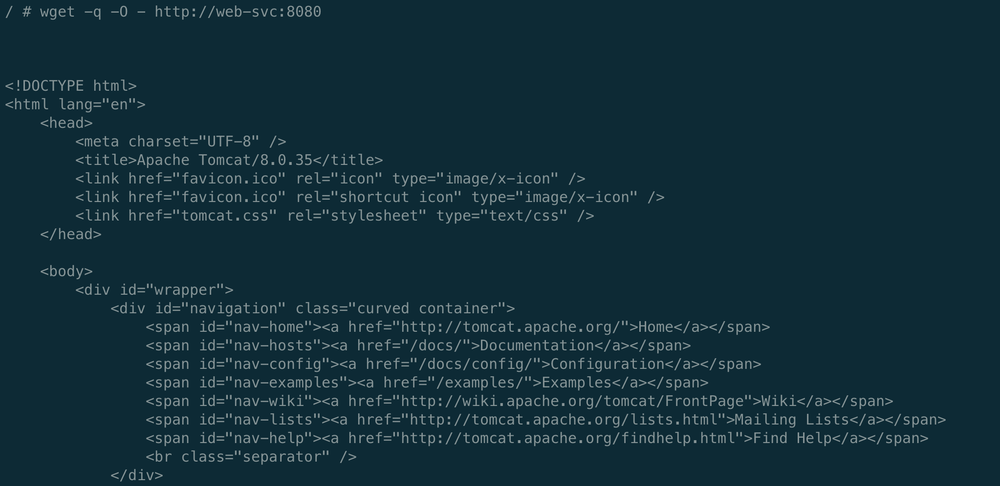

Istio学习之CRD2⃣️：DestinationRule
今天来学习Istio关于流量管理的另一个CRD——DestinationRule，根据字面意思即目标规则，我们可以理解VirtualService为流量的路由，那么DestinationRule则为流量路由之后的去处。
介绍
首先献上官方文档：https://istio.io/latest/zh/docs/reference/config/networking/destination-rule/
样例
apiVersion: networking.istio.io/v1alpha3 kind: DestinationRule metadata: name: bookinfo-ratings spec: # 含义同VirtualService中destination的host字段一致。 host: ratings.prod.svc.cluster.local # 流量策略，包括负载均衡、连接池策略、异常点检查等 trafficPolicy: # 负载均衡策略，支持随机负载均衡 /按权重负载均衡 /最少请求负载均衡 / hash轮训等 loadBalancer: simple: LEAST_CONN # 连接池策略 connectionPool: # tcp连接池设置 tcp: maxConnections: 100 connectTimeout: 30ms tcpKeepalive: time: 7200s interval: 75s http: http2MaxRequests: 1000 maxRequestsPerConnection: 10 # 异常点检查 outlierDetection: consecutiveErrors: 7 interval: 5m baseEjectionTime: 15m # tls设置 tls: mode: MUTUAL clientCertificate: /etc/certs/myclientcert.pem privateKey: /etc/certs/client_private_key.pem caCertificates: /etc/certs/rootcacerts.pem # 服务端点集合 subsets: # subset名称可以用于路由规则中的流量拆分，与virtualService的subset的引用 - name: testversion # 使用标签对服务注册表中的服务端点进行筛选 labels: version: v3 trafficPolicy: loadBalancer: simple: ROUND_ROBIN
- 作用：我们可以通过结合virtualService，使用 Destination Rule 对流量划分不同的子集，根据不同的条件比如用户不同的身份、地址位置等条件的识别后的进行不同的流量路由，或者在版本更新的时候，使用灰度发布。
- VirtualService对象和DestinationRule对象既可以单独使用、也可以结合使用。功能上VirtualService的功能之一是在后端不同Service中选择一个转发请求，而Service是在后端不同Pod中选择一个转发请求。DestinationRule是对不同后端的同一个Service上进行划分不同的subset。VirtualService和DestinationRule是通过subnet关联起来的。
演示
还是以上次VirtualService的httpd和tomcat例子为演示，首先创建对应的Deployment
httpd
apiVersion: apps/v1 kind: Deployment metadata: name: httpd labels: server: httpd app: web spec: replicas: 1 selector: matchLabels: server: httpd app: web template: metadata: labels: server: httpd app: web spec: containers: - name: busybox image: busybox imagePullPolicy: IfNotPresent command: ["/bin/sh", "-c", "echo 'this is httpd' > /var/www/index.html; httpd -f -p 8080 -h /var/www"]tomcat
apiVersion: apps/v1 kind: Deployment metadata: name: tomcat labels: server: tomcat app: web spec: replicas: 1 selector: matchLabels: server: tomcat app: web template: metadata: labels: server: tomcat app: web spec: containers: - name: tomcat image: docker.io/kubeguide/tomcat-app:v1 imagePullPolicy: IfNotPresent
创建对应的service
apiVersion: v1 kind: Service metadata: name: web-svc spec: selector: app: web ports: - name: http port: 8080 targetPort: 8080 protocol: TCP使用DestinationRule根据label将我们的流量划分为不同的版本，假设把httpd为我们服务的v1版本，tomcat为v2版本，使用VirtualService进行不同的路由
```yaml apiVersion: networking.istio.io/v1alpha3 kind: DestinationRule metadata: name: demo-des spec: host: web-svc subsets:
- name: v1 labels: server: httpd
- name: v2 labels: server: tomcat
apiVersion: networking.istio.io/v1alpha3 kind: VirtualService metadata: name: web-svc-vs3 spec: hosts:
- web-svc
http:
- route:
- destination:
host: web-svc
subset: v2
+ 创建busybox进入测试
```yaml
apiVersion: apps/v1
kind: Deployment
metadata:
name: hexiaohong-client
spec:
replicas: 1
selector:
matchLabels:
app: hexiaohong-client
template:
metadata:
labels:
app: hexiaohong-client
spec:
containers:
- name: busybox
image: busybox
imagePullPolicy: IfNotPresent
command: ["/bin/sh", "-c", "sleep 3600"]
---
apiVersion: v1
kind: Service
metadata:
name: hexiaohong-client-svc
spec:
selector:
app: hexiaohong-client
ports:
- name: http
port: 8080
targetPort: 8080
protocol: TCP
查看virtualService与DestinationRule

进入busybox 请求
使用kubectl edit virtualservices XXX，修改subset的版本为v2，进入busybox请求，流量则导入到v2/tomcat去了
